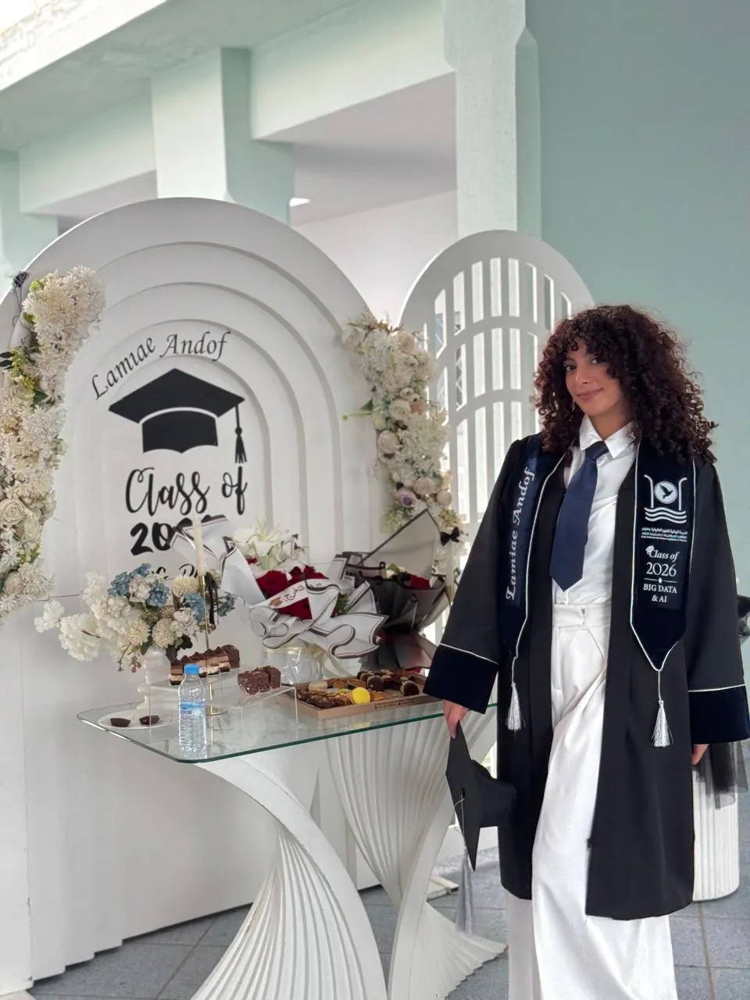
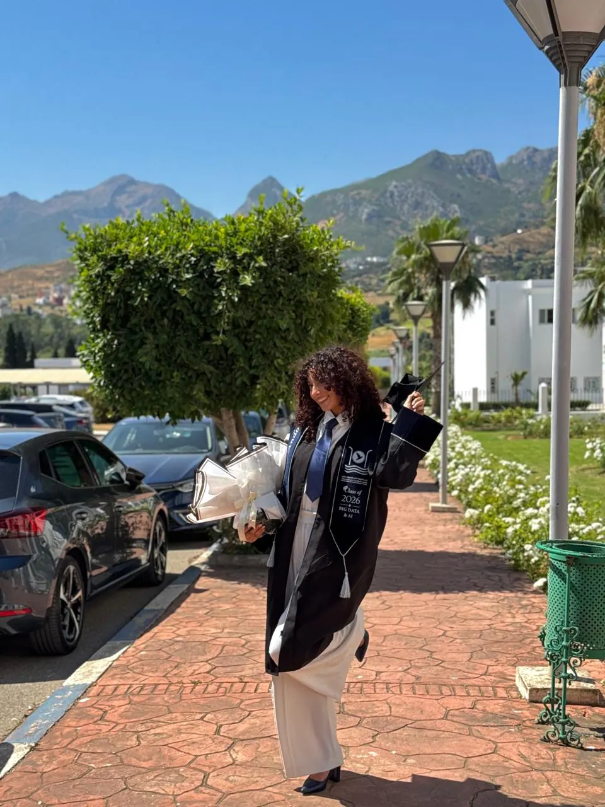
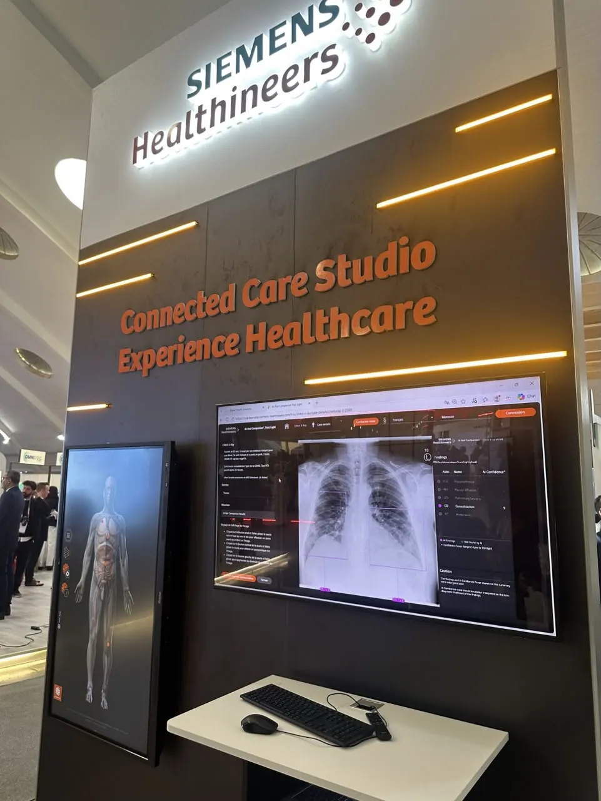
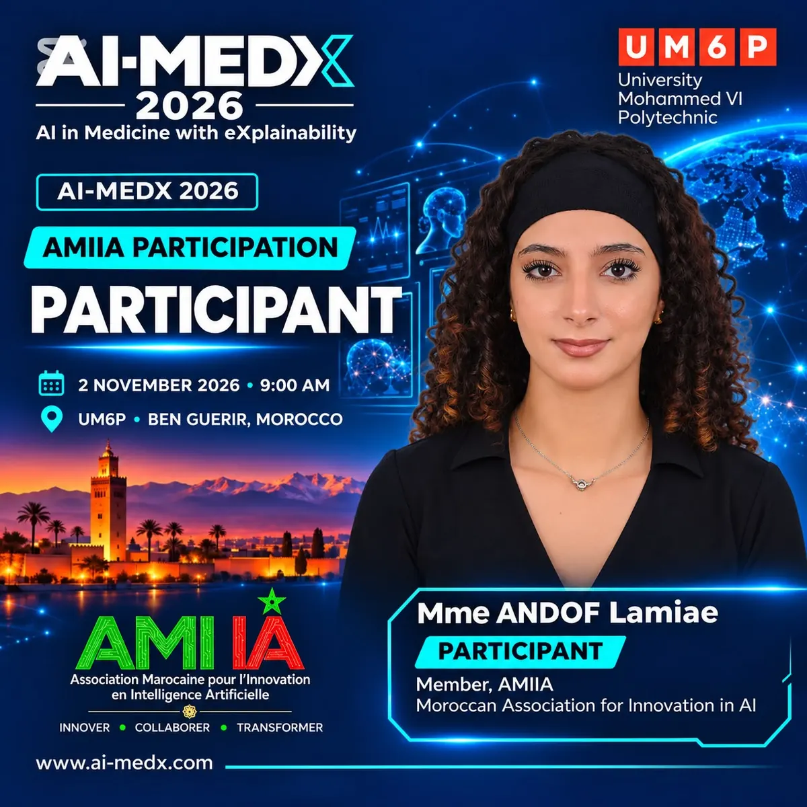
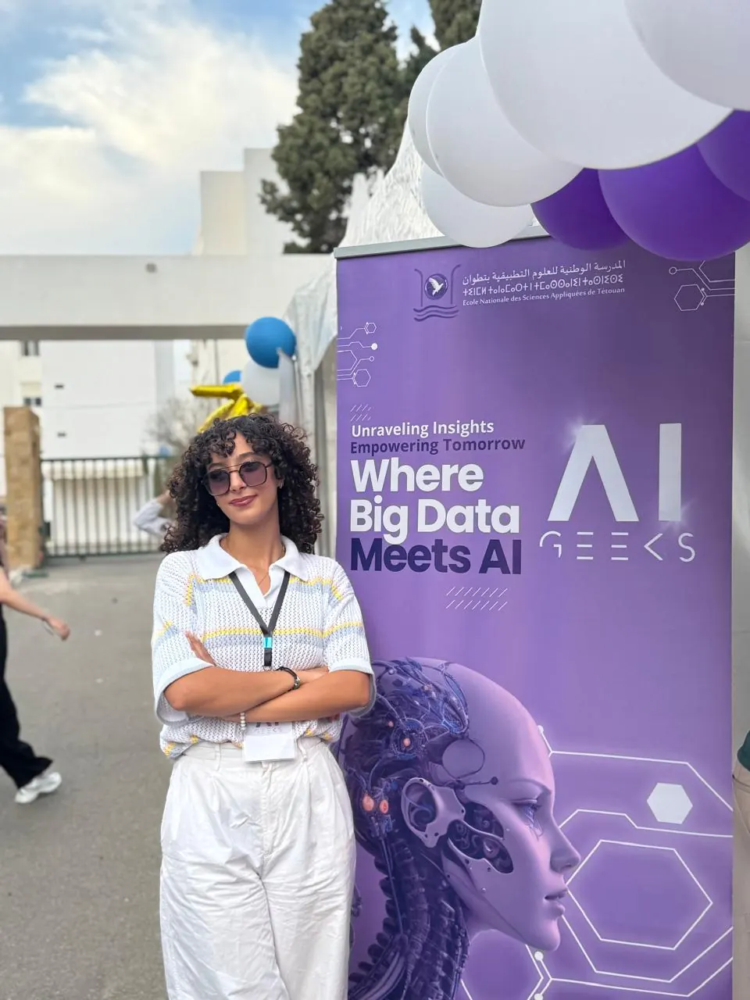
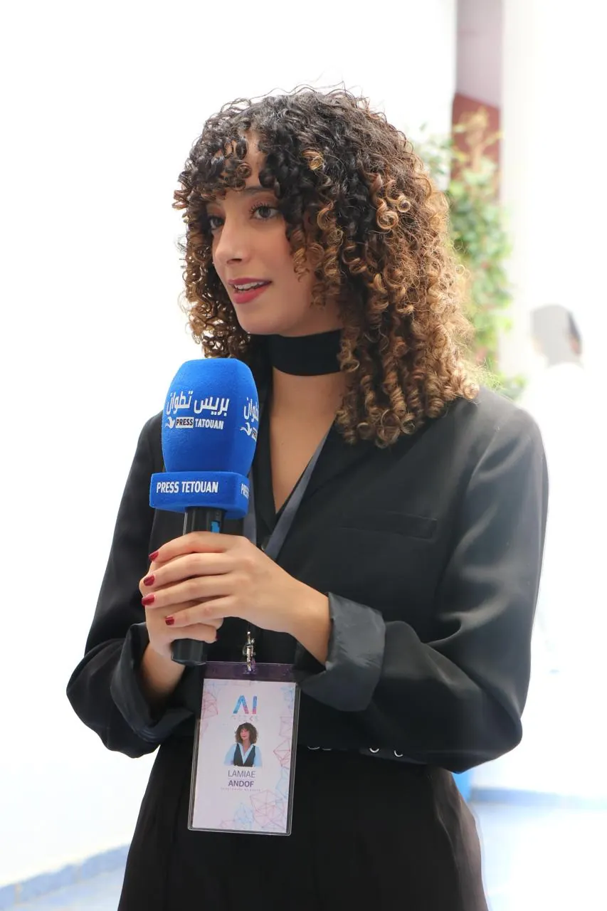
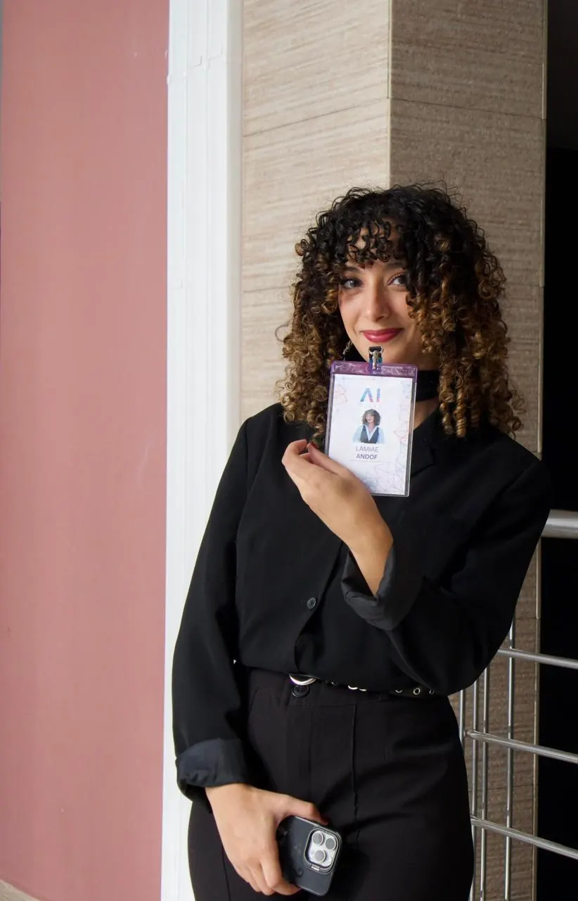
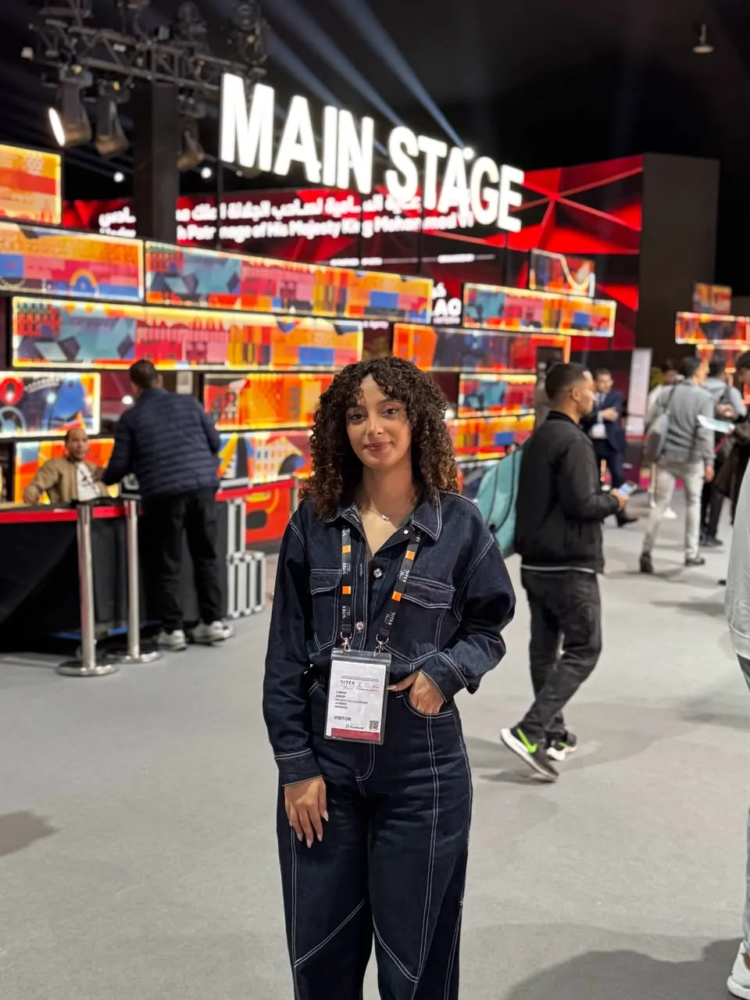

2023–2026Ingénieure Data Science, Big Data & IAEngineer, Data Science, Big Data & AI
Ma moyenne en cycle d'ingénieur (sur 20)My average in the engineering cycle (out of 20)

Diplomation 2026Graduation 2026

Campus de l'ENSA Tétouan, 2026ENSA Tétouan campus, 2026
2026Ingénieure d'État, mention Bien · PFE 19/20State engineer, with honours · final project 19/20
Chapitre 3 · Ce que j'ai construitChapter 3 · What I built
Cinq missions, des résultats mesurés.Five assignments, measured results.
Cliquez sur une carte pour voir le problème, ce que j'ai fait et le résultat.Click a card to see the problem, what I did and the result.
févr. – juin 2026Feb – June 2026 Casablanca
Ingénieure IA, projet de fin d'étudesAI engineer, final-year project
52 → 96 %traçabilité des sources de mon assistant RAGsource traceability of my RAG assistant
ProblèmeProblem
Répondre aux questions des équipes à partir des documents internes.Answer staff questions from internal documents.
Ce que j'ai faitWhat I did
Un assistant IA (RAG), livré en SDK Python réutilisable. Une étude exploratoire de GraphRAG pour une version 2 (non implémentée).A RAG assistant delivered as a reusable Python SDK. An exploratory study of GraphRAG for a version 2 (not implemented).
RésultatResult
Fidélité des réponses de 71 % à 89 %, traçabilité des sources de 52 % à 96 %.Answer faithfulness from 71% to 89%, source traceability from 52% to 96%.
+DétailsDetails
mars – sept. 2026Mar – Sept 2026 Casablanca
Chargée de mission Data & IAData & AI officer
182véhicules suivis sur une seule plateformevehicles tracked on one platform
ProblèmeProblem
Environ 1 h de saisie manuelle par jour pour suivre la flotte.About 1 hour of manual data entry per day to track the fleet.
Ce que j'ai faitWhat I did
Une plateforme de suivi avec tableau de bord.A tracking platform with a dashboard.
RésultatResult
Un export en un clic au lieu de la saisie quotidienne.A one-click export instead of daily manual entry.
98 %de précision sur les plaques, en temps réelprecision on licence plates, in real time
ProblèmeProblem
Détecter les véhicules et lire leurs plaques au port de Tanger Med.Detect vehicles and read their plates at the port of Tanger Med.
Ce que j'ai faitWhat I did
Une base de plus de 10 000 images annotées, des modèles YOLOv5 (détection) et OCR (lecture).A dataset of over 10,000 annotated images, YOLOv5 (detection) and OCR (reading) models.
FR + darijadeux langues pour répondre aux agriculteurstwo languages to answer farmers
Ce que j'ai faitWhat I did
Un chatbot en français et en darija pour les agriculteurs.A chatbot in French and Darija for farmers.
+DétailsDetails
Ministère de l'Éducation nationaleMinistry of National Education
juil. – sept. 2024July – Sept 2024 Rabat
Direction des systèmes d'informationIT department
2024mon premier assistant IA, pour les enseignantsmy first AI assistant, for teachers
Ce que j'ai faitWhat I did
Un assistant IA pour les enseignants.An AI assistant for teachers.
+DétailsDetails
Mes outilsMy tools
PyTorch
CNN
YOLOv5
Transformers
Grad-CAM
SHAP
LIME
LLM
RAG
Python
SQL
Pandas
Scikit-learn
FastAPI
Docker
Git
Français B2 (TCF, 465 points) · anglais intermédiaire · arabe langue maternelleFrench B2 (TCF, 465 points) · intermediate English · native Arabic
Chapitre 4 · Le tournant vers la santéChapter 4 · Turning to health
Comment je suis arrivée à l'imagerie médicale.How I came to medical imaging.
2024
Ma première IA sur des radiographies thoraciques.My first AI on chest X-rays.
Projet Coursera « Detecting COVID-19 with Chest X-Ray using PyTorch », 18 mai 2024.Coursera project "Detecting COVID-19 with Chest X-Ray using PyTorch", 18 May 2024.
Certificat Coursera, 18 mai 2024Coursera certificate, 18 May 2024
Mai 2026May 2026
GITEX Future Health Africa, Casablanca
Déléguée. J'y ai vu l'IA appliquée à la radiographie thoracique et à l'échographie.Delegate. I saw AI applied to chest X-ray and ultrasound.

IA en radiographie thoracique, GITEX Future Health Africa, mai 2026AI for chest X-ray, GITEX Future Health Africa, May 2026IA en échographie, mai 2026AI for ultrasound, May 2026Badge de déléguée, 4-6 mai 2026Delegate badge, 4–6 May 2026
Nov. 2026Nov 2026
AI-MEDX, UM6P Ben Guerir
« AI in Medicine with eXplainability », du 2 au 4 novembre, avec l'AMIIA. Je suis membre de sa cellule HealthTech."AI in Medicine with eXplainability", 2–4 November, with AMIIA. I am a member of its HealthTech unit.
AI-MEDX 2026, UM6P Ben GuerirCertificat de participationCertificate of participation

Annonce de l'AMIIAAMIIA announcement
Et ensuiteAnd then
Mon propre projet : une IA explicable sur radiographies thoraciques.My own project: explainable AI on chest X-rays.
Chapitre 5 · Mon projet phareChapter 5 · My main project
Où regarde une IA quand elle lit une radiographie ?Where does an AI look when it reads an X-ray?
J'ai entraîné un DenseNet-121 sur des radiographies d'enfants, puis je l'ai testé sur 624 images qu'il n'avait jamais vues.I trained a DenseNet-121 on children's X-rays, then tested it on 624 images it had never seen.
Projet pédagogique · pas un outil de diagnosticEducational project · not a diagnostic tool
Une radiographie du test et la vraie carte Grad-CAM du modèle.A test X-ray and the model's real Grad-CAM map. Kermany et al., 2018 (CC BY 4.0)
0,976
AUC sur le test (IC 95 % : 0,961–0,988)test AUC (95% CI: 0.961–0.988)
3/390
pneumonies ratéespneumonias missed
44/234
fausses alertes : mon point faiblefalse alarms: my weak point
Glissez pour voir où regarde le modèle.Drag to see where the model looks.
Quatre vrais cas du test : deux réussites, deux erreurs.Four real test cases: two successes, two errors.
radioGrad-CAM
Pneumonie détectée
P = 1,000
Je ne suis pas radiologue : mes lectures restent prudentes. Grad-CAM montre où le modèle regarde, pas ce qu'il y voit.I am not a radiologist, so my readings stay cautious. Grad-CAM shows where the model looks, not what it sees.
Choisir un seuil, c'est choisir ses erreurs.Choosing a threshold means choosing your errors.
Déplacez le curseur : tout est recalculé en direct sur les 624 vraies prédictions.Move the slider: everything is recomputed live on the 624 real predictions.
3pneumonies ratéesmissed pneumonias
44fausses alertesfalse alarms
0,992sensibilitésensitivity
0,812spécificitéspecificity
Le seuil « haute sensibilité » a été fixé sur la validation, avant de voir le test. Sur le test, il n'a sauvé aucune pneumonie de plus et a ajouté 16 fausses alertes.The "high sensitivity" threshold was set on validation, before seeing the test set. On the test set, it caught no extra pneumonia and added 16 false alarms.
Cyan : DenseNet-121 (AUC 0,976). Orange : baseline, un petit CNN (AUC 0,926). Le point suit votre seuil.Cyan: DenseNet-121 (AUC 0.976). Orange: baseline, a small CNN (AUC 0.926). The dot follows your threshold.
Le piège que j'ai découvert.The trap I found.
Les images de pneumonie sont plus larges. Leur seule forme suffisait à deviner la classe.Pneumonia images are wider. Their shape alone was enough to guess the class.
0,87
AUC de la forme seule, sans regarder la radio (0,865 sur le train, 0,704 sur le test).AUC of the shape alone, without looking at the X-ray (0.865 on training, 0.704 on test).
Écraser les images en carré aurait offert ce raccourci au modèle. J'ai recadré au centre, avant tout entraînement.Squashing the images into squares would have handed this shortcut to the model. I centre-cropped them before any training.
5 856 radiographies d'enfants de 1 à 5 ans, un seul hôpital (Kermany et al., Cell, 2018).
Validation recréée par patient : aucun enfant à la fois en entraînement et en validation. Un tirage image par image en aurait mis 428 des deux côtés.
Perte pondérée (74 % de pneumonies), fine-tuning en deux temps, arrêt sur l'AUC de validation.
Intervalles de confiance par bootstrap sur le test officiel, resté intact jusqu'à la fin.
Entraîné sur un GPU de 2 Go grâce à la précision mixte et au checkpointing.
5,856 X-rays of children aged 1 to 5, one hospital (Kermany et al., Cell, 2018).
Validation rebuilt by patient: no child in both training and validation. An image-level split would have put 428 on both sides.
Weighted loss (74% pneumonia), two-stage fine-tuning, early stopping on validation AUC.
Bootstrap confidence intervals on the official test set, untouched until the end.
Trained on a 2 GB GPU thanks to mixed precision and checkpointing.
Ce que montrent les 624 cartes Grad-CAMWhat the 624 Grad-CAM maps show
En moyenne, 24,7 % de la carte tombe sur les bords de l'image, contre 36 % pour une carte uniforme. Seules 2 cartes sur 624 regardent surtout les bords. Pour les pneumonies prédites, le modèle regarde les poumons.
On average, 24.7% of the map falls on the image borders, versus 36% for a uniform map. Only 2 of 624 maps look mostly at the borders. For predicted pneumonia, the model looks at the lungs.
Limites et usage responsableLimits and responsible use
Des enfants, un seul hôpital : rien ne garantit les performances ailleurs.
La spécificité chute de 0,995 en validation à 0,812 en test.
Pas de distinction virale ou bactérienne, aucune autre maladie.
Grad-CAM ne localise pas une lésion.
Aucune validation clinique : ce n'est pas un dispositif médical.
Children, one hospital: nothing guarantees performance elsewhere.
Specificity drops from 0.995 on validation to 0.812 on test.
No viral/bacterial distinction, no other disease.
Grad-CAM does not localise a lesion.
No clinical validation: this is not a medical device.
ProjetsProjects
Ce que je construis aussi.What else I build.
Terminé · 2026Completed · 2026
IA explicable sur radiographies thoraciquesExplainable AI on chest X-rays
ONZEVUE, tableau de bord du staff (données fictives)ONZEVUE, staff dashboard (fictional data)
En cours · prototype, données fictivesOngoing · prototype, fictional data
ONZEVUE
Le suivi de la charge des joueurs de football, avec un étudiant en Master STAPS. J'y apprends à transformer des données humaines en décisions.Monitoring football players' training load, with a sports-science master's student. I am learning to turn human data into decisions.
FonctionnalitésFeatures
Tableau de bord : charge interne (durée × RPE), distance GPS, atteinte des cibles.
Fiche joueur avec recommandation expliquée (« Pourquoi ? »), validée par le staff.
Wellness : donnée de santé jamais transmise au modèle d'IA.
Import de fichiers GPS (CSV, Excel).
En cours : connexion aux appareils par API, prédiction de la charge.
L'analyse conjointe de la vidéo, de l'audio et du texte.Joint analysis of video, audio and text.
En dehors des coursBeyond classes
Créer, organiser, aller voir.Create, organise, go and see.
Co-fondatrice du club AI Geeks à l'ENSA Tétouan. Cheffe de projet ENACTUS. Membre de la cellule HealthTech de l'AMIIA.Co-founder of the AI Geeks club at ENSA Tétouan. ENACTUS project lead. Member of AMIIA's HealthTech unit.

Un événement du club AI Geeks, ENSA TétouanAn AI Geeks club event, ENSA Tétouan

Interview accordée à Press TétouanInterview with Press Tétouan

Co-fondatrice d'AI GeeksAI Geeks co-founder

GITEX Africa, Marrakech, avril 2025GITEX Africa, Marrakech, April 2025Visiteuse au nom d'AI GeeksVisitor on behalf of AI Geeks
Chapitre 6 · Ce que je viseChapter 6 · What I aim for
Concevoir des outils d'IA fiables et explicables, au service des soignants.Building reliable, explainable AI tools that serve caregivers.
Il me manque la connaissance clinique : lire une image médicale, comprendre le parcours de soin et ses règles. C'est ce que je viens apprendre.What I lack is clinical knowledge: reading a medical image, understanding the care pathway and its rules. That is what I want to learn.
Master en IA appliquée à la santéMaster's in AI for healthImagerie médicaleMedical imagingFrance · rentrée 2027France · from 2027